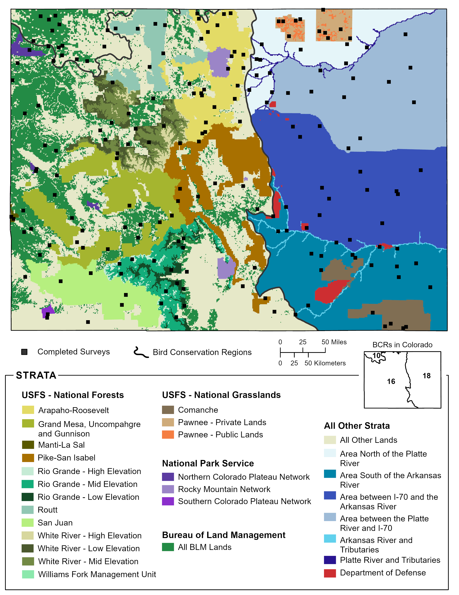

15 Colorado

Colorado Statewide: Total
We obtained results for Colorado Statewide: Total by compiling and jointly analyzing data from 30 strata.
Field technicians completed 213 of 193 planned surveys (110%) in 2022. Technicians conducted 2032 point counts within the 193 surveyed grid cells between May 16 and July 25. They detected 202 bird species, including 38 priority species.
Bird Conservancy estimated densities and population sizes for 237 species that were detected in any year during which surveys were conducted, 46 of which are priority species. The data yielded robust density estimates (CV < 50%) for 107 species.
Bird Conservancy estimated the proportion of 1 km² grid cells occupied (Ψ, Psi) throughout Colorado Statewide: Total for 238 species that were detected in any year during which surveys were conducted, 46 of which are priority species. The data yielded robust occupancy estimates (CV < 50%) for 156 species.
To view a map of survey locations, density and occupancy results and species counts within Colorado Statewide: Total across all years of the project, follow the web link below. Hit “Ok” on the Rocky Mountain Avian Data Center Disclaimer and hit the “Run Query” button highlighted in red located near the top of the page (the map will zoom to the area of interest). To view occupancy, density, or species counts results, click on the respective tab in the upper left above the map.
All Other Lands in Colorado
We obtained results for All Other Lands in Colorado by compiling and jointly analyzing data from seven strata.
Field technicians completed 83 of 72 planned surveys (115%) in 2022. Technicians conducted 763 point counts within the 72 surveyed grid cells between May 16 and July 21. They detected 152 bird species, including 28 priority species.
Bird Conservancy estimated densities and population sizes for 202 species that were detected in any year during which surveys were conducted, 41 of which are priority species. The data yielded robust density estimates (CV < 50%) for 83 species.
Bird Conservancy estimated the proportion of 1 km² grid cells occupied (Ψ, Psi) throughout All Other Lands in Colorado for 203 species that were detected in any year during which surveys were conducted, 43 of which are priority species. The data yielded robust occupancy estimates (CV < 50%) for 111 species.
To view a map of survey locations, density and occupancy results and species counts within All Other Lands in Colorado across all years of the project, follow the web link below. Hit “Ok” on the Rocky Mountain Avian Data Center Disclaimer and hit the “Run Query” button highlighted in red located near the top of the page (the map will zoom to the area of interest). To view occupancy, density, or species counts results, click on the respective tab in the upper left above the map.
15.1 Colorado BCR 10
Colorado BCR 10: Total
We obtained results for Colorado BCR 10: Total by compiling and jointly analyzing data from two strata.
Field technicians completed all planned surveys (100%) in 2022. Technicians conducted 182 point counts within the 14 surveyed grid cells between May 18 and June 13. They detected 75 bird species, including 13 priority species.
Bird Conservancy estimated densities and population sizes for 127 species that were detected in any year during which surveys were conducted, 26 of which are priority species. The data yielded robust density estimates (CV < 50%) for 32 species.
Bird Conservancy estimated the proportion of 1 km² grid cells occupied (Ψ, Psi) throughout Colorado BCR 10: Total for 124 species that were detected in any year during which surveys were conducted, 23 of which are priority species. The data yielded robust occupancy estimates (CV < 50%) for 50 species.
To view a map of survey locations, density and occupancy results and species counts within Colorado BCR 10: Total across all years of the project, follow the web link below. Hit “Ok” on the Rocky Mountain Avian Data Center Disclaimer and hit the “Run Query” button highlighted in red located near the top of the page (the map will zoom to the area of interest). To view occupancy, density, or species counts results, click on the respective tab in the upper left above the map.
All Other Lands in Colorado BCR 10
We obtained results for All Other Lands in Colorado BCR 10 by compiling and analyzing data from one stratum.
Field technicians completed all planned surveys (100%) in 2022. Technicians conducted 55 point counts within the 5 surveyed grid cells between May 21 and June 13. They detected 62 bird species, including 6 priority species.
Bird Conservancy estimated densities and population sizes for 111 species that were detected in any year during which surveys were conducted, 21 of which are priority species. The data yielded robust density estimates (CV < 50%) for 25 species.
Bird Conservancy estimated the proportion of 1 km² grid cells occupied (Ψ, Psi) throughout All Other Lands in Colorado BCR 10 for 110 species that were detected in any year during which surveys were conducted, 19 of which are priority species. The data yielded robust occupancy estimates (CV < 50%) for 38 species.
To view a map of survey locations, density and occupancy results and species counts within All Other Lands in Colorado BCR 10 across all years of the project, follow the web link below. Hit “Ok” on the Rocky Mountain Avian Data Center Disclaimer and hit the “Run Query” button highlighted in red located near the top of the page (the map will zoom to the area of interest). To view occupancy, density, or species counts results, click on the respective tab in the upper left above the map.
15.2 Colorado BCR 16
Colorado BCR 16: Total
We obtained results for Colorado BCR 16: Total by compiling and jointly analyzing data from 18 strata.
Field technicians completed 120 of 108 planned surveys (111%) in 2022. Technicians conducted 1050 point counts within the 108 surveyed grid cells between May 17 and July 25. They detected 153 bird species, including 24 priority species.
Bird Conservancy estimated densities and population sizes for 200 species that were detected in any year during which surveys were conducted, 35 of which are priority species. The data yielded robust density estimates (CV < 50%) for 86 species.
Bird Conservancy estimated the proportion of 1 km² grid cells occupied (Ψ, Psi) throughout Colorado BCR 16: Total for 198 species that were detected in any year during which surveys were conducted, 35 of which are priority species. The data yielded robust occupancy estimates (CV < 50%) for 123 species.
To view a map of survey locations, density and occupancy results and species counts within Colorado BCR 16: Total across all years of the project, follow the web link below. Hit “Ok” on the Rocky Mountain Avian Data Center Disclaimer and hit the “Run Query” button highlighted in red located near the top of the page (the map will zoom to the area of interest). To view occupancy, density, or species counts results, click on the respective tab in the upper left above the map.
All Other Lands in Colorado BCR 16
We obtained results for All Other Lands in Colorado BCR 16 by compiling and analyzing data from one stratum.
Field technicians completed 25 of 22 planned surveys (114%) in 2022. Technicians conducted 190 point counts within the 22 surveyed grid cells between May 17 and July 21. They detected 116 bird species, including 16 priority species.
Bird Conservancy estimated densities and population sizes for 178 species that were detected in any year during which surveys were conducted, 33 of which are priority species. The data yielded robust density estimates (CV < 50%) for 64 species.
Bird Conservancy estimated the proportion of 1 km² grid cells occupied (Ψ, Psi) throughout All Other Lands in Colorado BCR 16 for 174 species that were detected in any year during which surveys were conducted, 33 of which are priority species. The data yielded robust occupancy estimates (CV < 50%) for 86 species.
To view a map of survey locations, density and occupancy results and species counts within All Other Lands in Colorado BCR 16 across all years of the project, follow the web link below. Hit “Ok” on the Rocky Mountain Avian Data Center Disclaimer and hit the “Run Query” button highlighted in red located near the top of the page (the map will zoom to the area of interest). To view occupancy, density, or species counts results, click on the respective tab in the upper left above the map.
15.3 Colorado BCR 18
Colorado BCR 18: Total
We obtained results for Colorado BCR 18: Total by compiling and jointly analyzing data from five strata.
Field technicians completed 53 of 45 planned surveys (118%) in 2022. Technicians conducted 518 point counts within the 45 surveyed grid cells between May 16 and June 15. They detected 84 bird species, including 14 priority species.
Bird Conservancy estimated densities and population sizes for 132 species that were detected in any year during which surveys were conducted, 23 of which are priority species. The data yielded robust density estimates (CV < 50%) for 32 species.
Bird Conservancy estimated the proportion of 1 km² grid cells occupied (Ψ, Psi) throughout Colorado BCR 18: Total for 131 species that were detected in any year during which surveys were conducted, 22 of which are priority species. The data yielded robust occupancy estimates (CV < 50%) for 49 species.
To view a map of survey locations, density and occupancy results and species counts within Colorado BCR 18: Total across all years of the project, follow the web link below. Hit “Ok” on the Rocky Mountain Avian Data Center Disclaimer and hit the “Run Query” button highlighted in red located near the top of the page (the map will zoom to the area of interest). To view occupancy, density, or species counts results, click on the respective tab in the upper left above the map.
Colorado BCR 18 Rivers
We obtained results for Colorado BCR 18 Rivers by compiling and jointly analyzing data from two strata.
Field technicians completed all planned surveys (100%) in 2022. Technicians conducted 101 point counts within the 11 surveyed grid cells between May 17 and June 22. They detected 90 bird species, including 7 priority species.
Bird Conservancy estimated densities and population sizes for 176 species that were detected in any year during which surveys were conducted, 25 of which are priority species. The data yielded robust density estimates (CV < 50%) for 35 species.
Bird Conservancy estimated the proportion of 1 km² grid cells occupied (Ψ, Psi) throughout Colorado BCR 18 Rivers for 172 species that were detected in any year during which surveys were conducted, 24 of which are priority species. The data yielded robust occupancy estimates (CV < 50%) for 72 species.
To view a map of survey locations, density and occupancy results and species counts within Colorado BCR 18 Rivers across all years of the project, follow the web link below. Hit “Ok” on the Rocky Mountain Avian Data Center Disclaimer and hit the “Run Query” button highlighted in red located near the top of the page (the map will zoom to the area of interest). To view occupancy, density, or species counts results, click on the respective tab in the upper left above the map.
Non-river Lands in Colorado BCR 18
We obtained results for Non-river Lands in Colorado BCR 18 by compiling and jointly analyzing data from eight strata.
Field technicians completed 68 of 60 planned surveys (113%) in 2022. Technicians conducted 699 point counts within the 60 surveyed grid cells between May 16 and June 15. They detected 108 bird species, including 16 priority species.
Bird Conservancy estimated densities and population sizes for 166 species that were detected in any year during which surveys were conducted, 28 of which are priority species. The data yielded robust density estimates (CV < 50%) for 44 species.
Bird Conservancy estimated the proportion of 1 km² grid cells occupied (Ψ, Psi) throughout Non-river Lands in Colorado BCR 18 for 164 species that were detected in any year during which surveys were conducted, 27 of which are priority species. The data yielded robust occupancy estimates (CV < 50%) for 59 species.
To view a map of survey locations, density and occupancy results and species counts within Non-river Lands in Colorado BCR 18 across all years of the project, follow the web link below. Hit “Ok” on the Rocky Mountain Avian Data Center Disclaimer and hit the “Run Query” button highlighted in red located near the top of the page (the map will zoom to the area of interest). To view occupancy, density, or species counts results, click on the respective tab in the upper left above the map.